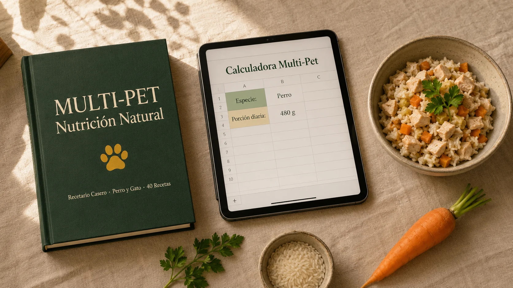
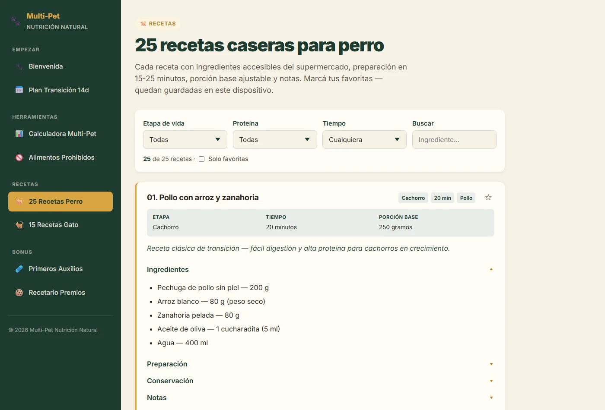
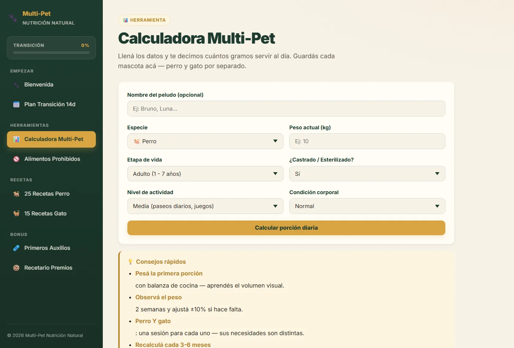
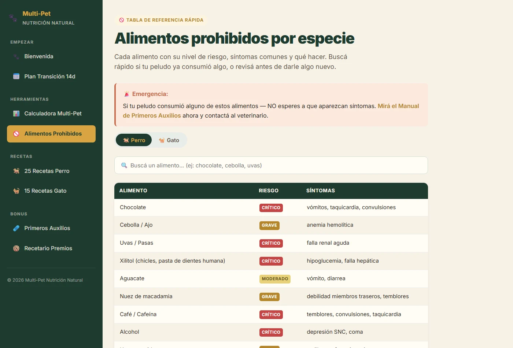
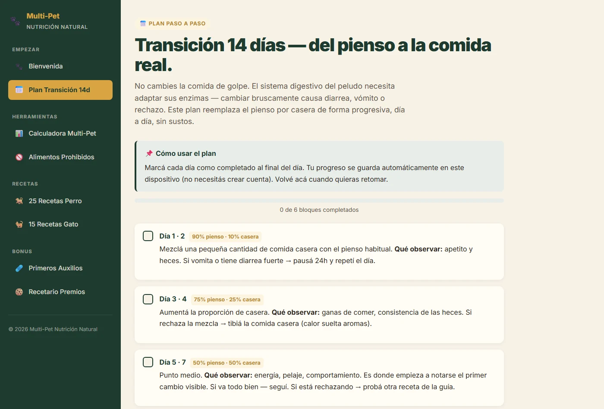
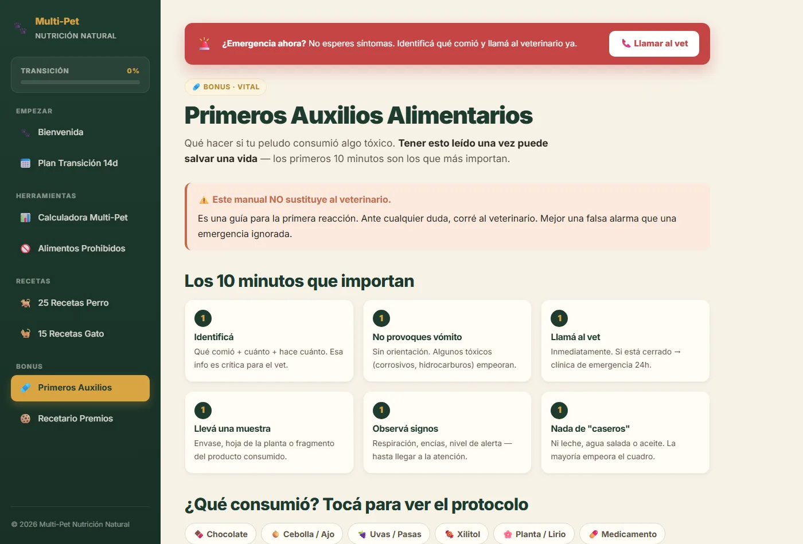
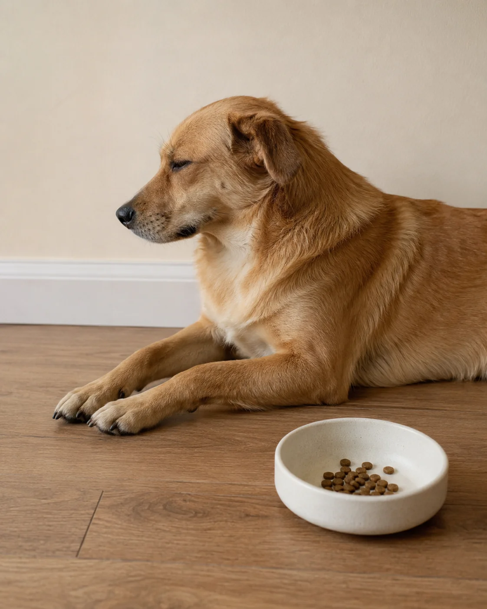
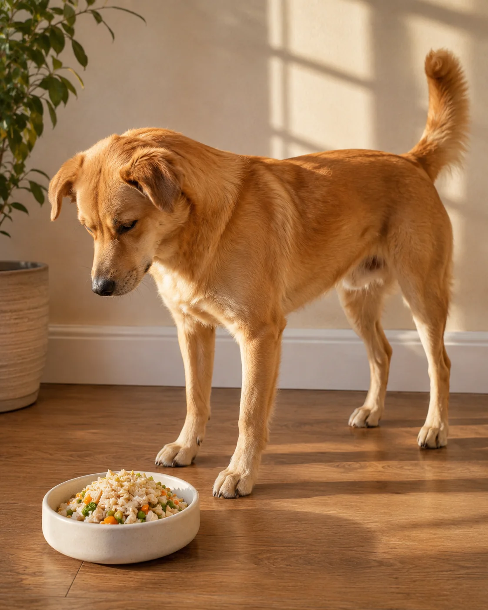
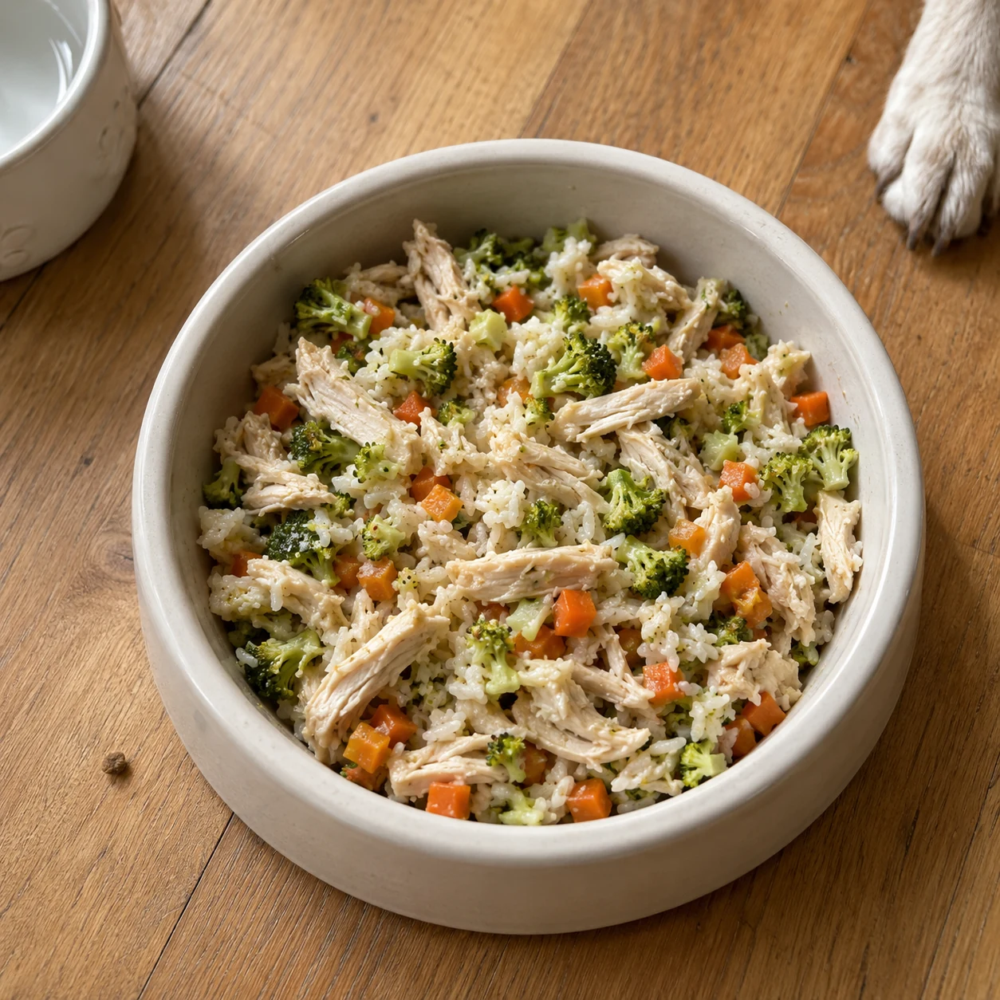

Una guía con 40 recetas (25 perro + 15 gato), calculadora de porción por peso, tabla de alimentos prohibidos por especie y plan de transición de 14 días. Sin volverte nutricionista. Sin gastar una fortuna.

El pienso "premium" que le compras a tu peludo cuesta $80, $120, a veces $150 USD al mes. Y aun así lo ves comer sin ganas, con el pelo opaco, ganando peso o con la digestión revuelta.
Lees la etiqueta y no entiendes la mitad. "Subproductos cárnicos". "Harinas animales". Colorantes. Conservantes. "Aromas artificiales".
Eso es lo que come tu peludo todos los días.
Multi-Pet Nutrición Natural te enseña a cocinarle comida real — perro o gato, en cada etapa de su vida — en 15 minutos al día, con ingredientes del supermercado, por menos de lo que pagas hoy.
No es consejo veterinario. No prometemos milagros. Te damos cuatro herramientas que funcionan juntas: 40 recetas, una calculadora que te dice cuántos gramos servir, una tabla con todo lo prohibido por especie, y un plan día por día para hacer la transición sin que se enferme.
Lo que decidas cocinarle a partir de hoy es asunto tuyo. Nosotros solo te abrimos el camino.
Porque cocinar bien para tu peludo no es solo "tener recetas".
Multi-Pet no es un curso de 40 horas. No es mentoría mensual. No prometemos que tu peludo viva 25 años.
Es exactamente lo que dice el nombre: guía + herramientas utilitarias, apoyadas en literatura veterinaria pública (NRC, WSAVA, ASPCA). Nada inventado. Lo que ya funciona, organizado en un sistema que cualquier dueño puede aplicar mañana.

25 perro (9 cachorro · 10 adulto · 6 senior) + 15 gato (5 gatito · 7 adulto · 3 senior, con énfasis en taurina). Cada receta: ingredientes accesibles del supermercado, preparación en 15 minutos, porción base, conservación y notas.

Llenas 6 datos del peludo (especie, peso, etapa, castración, actividad, condición). La planilla calcula la porción diaria. Fórmula NRC validada con 41 combinaciones tabuladas. Una versión para perro, otra para gato.

1 página imprimible. Cara A: prohibidos perro · Cara B: prohibidos gato. Cada alimento con nivel de riesgo (CRÍTICO / GRAVE / MODERADO) y síntomas. Imprimís una vez. Pegás en la cocina. Listo.

Día por día: qué porcentaje de pienso y qué porcentaje de casera servir, qué señales observar, cuándo pausar. Versiones leve diferentes para perro y gato (los gatos suelen tardar más en aceptar).
La guía te dice qué cocinar. La calculadora te dice cuánto. La tabla te dice qué evitar. El plan te dice cómo migrar. Las cuatro piezas se necesitan entre sí. Por eso van juntas.

Qué hacer si tu peludo consumió algo tóxico · 10 señales de alerta (vómito, letargia, convulsiones) · kit básico en casa · cuándo correr al veterinario.
Valor real $19.90 USD — incluido gratis con tu compra hoy.


Tu compra es inmediata. Llenás el peso de tu peludo en 30 segundos.
Ingredientes del supermercado, paso a paso. Sin tecnología complicada.
Día por día, sin cambios bruscos. A los 15 días, tu peludo come 100% natural.
Ahorro anual proyectado: $1.140 USD

*Ejemplo basado en perro adulto de 10 kg. Tu ahorro real depende del peso, los ingredientes que elijas y el precio del pienso que pagás hoy.
Llevaba 2 años pagando $130 al mes en un pienso "super premium" italiano y aun así Mía vomitaba 2 veces por semana y a Bruno se le caía el pelo en mechones. Empecé el plan de 14 días un poco escéptica — pensé "esto no va a funcionar para los dos". Al día 18 Bruno ya no se rascaba. A Mía le costó más (es selectiva con todo), pero al día 25 comía las recetas de gato sin protestar. Hoy gasto $32 al mes en ingredientes y los dos comen mejor que nunca.
Cuando traje a Toby a casa me dieron una bolsa de pienso y un "¡suerte!". Yo no tenía idea. Compraba el premium que recomendaba la vet pero Toby comía sin ganas y tenía gases todo el día. Lo que me decidió por Multi-Pet fue la calculadora — necesitaba que alguien me dijera literalmente "dale X gramos al día". Hice la receta 1 en 18 minutos. Toby la atacó. Ese fue el primer día en 6 meses que vi a mi perro comer con hambre real. Los gases desaparecieron a las 2 semanas.
Le daba atún en lata casi todos los días porque era lo único que le gustaba. Pelo opaco, vómitos frecuentes, y la vet me dijo que sus análisis renales empezaban a preocuparla. El bloque que explica por qué el atún diario es un problema fue el que me hizo el clic. Hice la transición lenta (la guía me decía cómo, día por día). Hoy Luna come pollo con corazón, pavo con hígado y sardina fresca — alterno. En el último chequeo los riñones estaban estables. El pelo le brilla como cuando era cachorra.
Le decían "gordito feliz" pero la vet me dijo que su sobrepeso le estaba pasando factura en las caderas. Llevaba 3 dietas comerciales "light" fallidas — bajaba 200g, volvía a subir 500g. La calculadora multi-pet me calculó la porción para condición "sobrepeso" y me bajó casi 30% lo que le venía dando. Las primeras 2 semanas pasé culpa, pero seguí porque tenía las recetas listas, no era improvisar. Max bajó 3.2 kg en 4 meses. Hoy juega como cuando tenía 5 años. Y gasto $40 menos al mes.
Compré Multi-Pet pensando solo en las recetas. El bonus del Manual de Primeros Auxilios fue lo que me terminó salvando. Hace 2 meses mi hijo dejó la mitad de un alfajor de chocolate en el piso, Coco lo encontró antes que yo. Mi primer impulso fue entrar en pánico — pero abrí el manual en el celular, vi los pasos exactos (cantidad consumida, llamar al vet con info concreta, no inducir vómito sin orden), y en 15 minutos estábamos en la clínica con todo el contexto. La vet me dijo que llegar con esa información hizo toda la diferencia. Pagué $14.90 y por ese manual ya valió 100 veces.
Soy madre de 2 nenes pequeños y trabajo full-time. Pensé que cocinarle a Rocco iba a ser "otro pendiente" más. La sorpresa: cocino sus comidas el domingo en 1.5 horas y le alcanza para toda la semana — mientras los nenes ven dibujos en la cocina, yo armo las porciones en tuppers de freezer. Ahora cocinarle es más rápido que ir al pet shop a comprar bolsa nueva.
Si pensás: "no tengo tiempo"Yo cocinaba arroz quemado y huevo crudo o duro. Nunca había seguido una receta en mi vida. Tobías es lo más importante que tengo y quería darle mejor — pero pensé "esto no es pa mí". La receta 1 del recetario fue como armar un Lego: hervir esto, hervir aquello, mezclar. Listo. Hoy Tobías come distinto cada día y yo gané confianza para cocinar para mí también. Cosas que pasan.
Si pensás: "no sé cocinar"Cleo es lo más exigente que conozco — rechazaba 3 de cada 4 alimentos que le ofrecía, incluso pienso premium. Compré Multi-Pet con expectativa baja: "si come 5 de las 15 recetas ya está bien". Sorpresa: acepta 12. La clave fue tibiar la comida los primeros días (la guía lo decía y yo no le había prestado atención) y empezar por las recetas con corazón de pollo y sardina, que son las más palatables. Ahora come variado y yo dejé de pelearme con el plato.
Si pensás: "mi peludo no va a aceptar"Vivo en una ciudad chica donde el pet shop más cercano tiene 4 marcas de pienso y la "premium" cuesta tres veces lo que pago en mi supermercado por pollo y arroz. Lo que me convenció de Multi-Pet fue ver la lista de ingredientes: pollo, arroz, zanahoria, calabaza, avena, huevo. Cosas que mi almacén tiene siempre. Hace 5 semanas que cocino para Manolo y la única vez que improvisé fue un día sin calabaza — usé batata, salió bien.
Si pensás: "¿funcionará donde vivo?"Si reconocés alguno de los cuatro, guardá tu dinero. No es para vos, y preferimos que no compres a que te frustres.
Las recetas tardan 15 minutos en promedio. El tiempo del café de la mañana. La mayoría se conservan 3-4 días en heladera o 30 días en freezer. En la práctica: cocinás una vez, servís toda la semana.
Si sabés hervir agua, picar zanahoria y cocinar arroz, ya sabés cocinarle a tu peludo. Las recetas no piden técnica. Piden ingredientes simples del supermercado. Sin sofrito francés. Sin temperaturas exactas. Sin equipo especial.
Para eso existe el plan de transición de 14 días. No es "de un día para otro". Es paso a paso, mezclando porcentajes crecientes de casera con porcentajes decrecientes de pienso. El 80% de los peludos se adapta en la primera semana. Para el 20% más selectivo (sobre todo gatos acostumbrados al atún), la guía trae recetas específicas de alta palatabilidad.
Si tu peludo está sano, las recetas son balanceadas con principios nutricionales generales (NRC + WSAVA + ASPCA). No necesitás autorización para cambiar a casera, igual que no la necesitás para cambiar de marca de pienso. Si tu peludo tiene condición médica diagnosticada, gestación o lactancia, consultá con tu veterinario antes. Multi-Pet es complemento, no sustituto del consejo veterinario.
Probablemente te faltó una de las 4 piezas: no sabías cuánto (sin calculadora), no sabías qué evitar (sin tabla), cambiaste de golpe (sin plan 14 días) o no tenías recetas balanceadas (solo "pollito hervido"). Cocinarle sin sistema falla. Con sistema, funciona.
Otros recetarios del nicho cuestan $25-35 USD y cubren solo perro o solo gato. Multi-Pet cubre los dos a $14.90 USD. Y no es solo PDF: es PDF + calculadora interactiva + tabla imprimible + plan día por día + manual de emergencia. Cinco herramientas por menos de un kilo de pienso premium.
Probás Multi-Pet por 7 días completos. Leés la guía. Abrís la calculadora. Imprimís la tabla. Empezás el plan de transición.
Si en 7 días sentís que el método no es para vos, por la razón que sea, escribís a Hotmart, hacés clic en "Solicitar reembolso" y te devuelven el 100% del dinero. Sin formularios. Sin discusión. Sin preguntar por qué.
Garantía respaldada por Hotmart. No podemos negarte el reembolso ni atrasarte: el sistema lo procesa automáticamente.
Vos arriesgás el tiempo de leer. Nosotros arriesgamos los $14.90.
El 40% de descuento ($24.90 → $14.90) es promocional de la primera semana de lanzamiento. Cuando termine, el precio vuelve a $24.90 USD. Sin descuento. Sin promesa de retornar.
No es countdown que se reinicia cada 24 horas. Si entrás después del cierre de la promo, pagás $24.90.
Sí. Escrito en español neutro. Los ingredientes son básicos y se encuentran en cualquier supermercado. Si el tuyo tiene pollo, arroz, zanahoria, calabaza, avena y huevo, empezás hoy.
Inmediato. Apenas Hotmart confirma el pago, llega a tu correo: link del PDF, enlace a la calculadora Sheets, tabla imprimible y manual de Primeros Auxilios.
40 recetas: 25 perro (9 cachorro · 10 adulto · 6 senior) + 15 gato (5 gatito · 7 adulto · 3 senior, con énfasis en taurina). Más bloques educativos: por qué no dar atún diariamente al gato, por qué evitar lácteos en gato adulto, cómo introducir nuevos ingredientes.
No. Está en Google Sheets, gratis, en la nube. Abrís el link, hacés clic en "Hacer una copia", queda guardada en tu Drive. Llenás 6 datos del peludo y te dice la porción diaria. Si tenés perro y gato, 2 copias (una para cada uno).
Por ahora solo perro y gato. Otros animales tienen requerimientos muy específicos que merecen guías propias. Preferimos cubrir bien dos especies a cubrir mal cinco.
Las recetas son balanceadas para peludos sanos. Si tu peludo tiene condición diagnosticada, gestación o lactancia, consultá con tu veterinario antes. Este recetario no sustituye consejo veterinario.
Garantía 7 días sin preguntas vía Hotmart. Devolución 100% automática. No tenés que justificar nada.
Lo sabés. Por eso cada año, cada mes, cada plato importa.
Por $14.90 USD, menos de un kilo de pienso premium, empezás hoy un sistema que cambia cómo tu peludo come, se ve, se siente y se relaciona con vos a la hora de la comida.
Llegaste hasta acá. Eso significa dos cosas: ya sabés que el pienso industrial no es la respuesta, y ya sabés que cocinarle real no tiene por qué ser complicado.
El descuento del 40% es por tiempo limitado y el precio vuelve a $24.90 USD cuando termine la promo. La garantía de 7 días te cubre del riesgo completo: si no te sirve, te devuelven la plata sin preguntas.
Tu peludo no eligió el pienso industrial. Lo elegiste vos.
Hoy podés elegir distinto. 🐾
Es una guía práctica + herramientas (calculadora, tabla, plan de transición) para alimentar a tu peludo con comida casera natural. Está basado en recomendaciones nutricionales generales de la literatura veterinaria pública (NRC, WSAVA, ASPCA).
Si tu peludo tiene condición médica, está en gestación o lactancia, o tienes cualquier duda sobre su salud, consulta siempre a tu profesional veterinario de confianza antes de aplicar.
Los resultados varían por individuo, raza y contexto. La calculadora es referencia inicial; observá el peso de tu peludo y ajustá conforme.